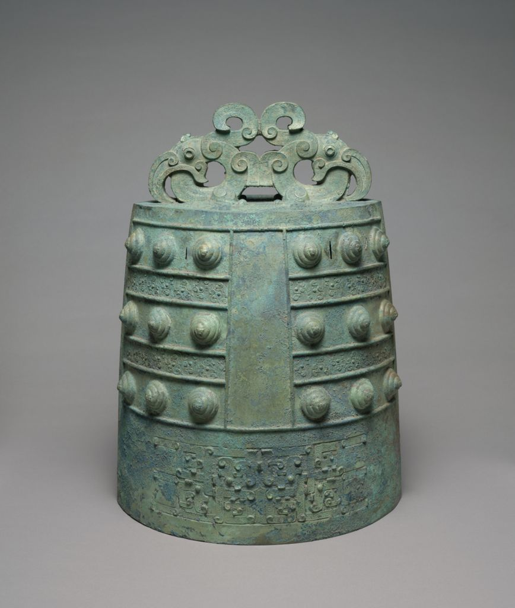
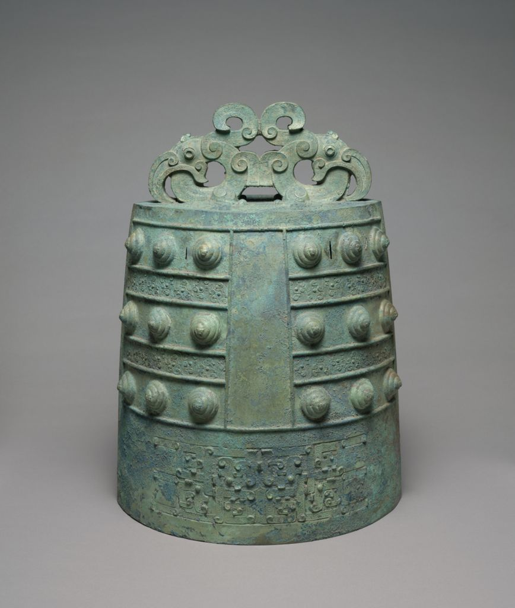

from the Warring States to the Hellenistic
Why Bronzes?
As a student who grew up in China now studying Classics, I always wanted to make comparative studies between these two ancient civilizations, from literature, philosophy, to art. This digital humanities project provides me the opportunity to actually visualize this comparison through the medium of ancient bronzes. The reason why I picked bronzes specifically was because bronzes were the one prominent form of art that both ancient Greece and China had in common. Ancient Greece or China might each have its own famous, distinctive, and unique form of art such as the Greek black and red pottery, Chinese porcelain, Chinese terracotta warriors, Greco-Roman marble statues, and many countless others. Meanwhile, bronzes were one of the few forms of art that both cultures had investigated with sophisticated techniques, varieties of topics, and preservations. I wish to make this comparison to invite more cultural interactions and communications between ancient Greece and China, as well as contemporary Greece and China.
Time Period in Parallel
This comparison of Chinese and Greek bronzes frames the time period from approximately 5th century BCE to 1st century CE, which is the Warring States (475 BCE~221 BCE) period in China and Hellenistic (323 BCE~31 BCE) period in Greece.
During this time frame, both civilizations went through strikingly similar historical progress: the transition of the fractured political system from Greek city-states (polis) and Chinese seven major warring-states (Qi, Chu, Yan, Han, Zhao, Wei, Qin) to one dominant empire (the Greek Macedonian Empire and the first Empire of China Qin with the following Western Han Dynasty).
This transition also meant constant warfares and the rise of political and military leaders like Alexander the Great (356 BCE~323 BCE) and the First Emperor of China Qin Shi Huang (259 BCE~210 BCE), who both died young at an early age.
Purpose of Bronzes
Under this historical context, both representations of bronze art had significantly evolved. In Greece, different from serene and idealized portraits of the Classical age, bronzes of the Hellenistic era emphasize pathos, appealing to viewers’ emotions by conveying an individual’s state of mind or experience of life through facial expression or gestures (National Gallery of Art).
In China, bronzes were no longer for ceremonial and sacrificial purposes exclusively for the predecessor Kings from the Zhou dynasty, and started to serve for individual states rulers and aristocrats. Warring-states bronzes therefore serve for more practical and individual uses and pleasure, such as in musical instruments like Zhong (bell), mirrors, and swords.
In general, both Chinese and Greek bronze artworks had transitioned from generic severity to the more specific individuality.
Can you recognize which one is Greek and which one is Chinese?
.jpg) 


While Chinese and Greek bronzes share lots of similarities in terms of political context and transition of representation, they are still distinctive from each other through the choice of subject and the depictions of details.
Within the database provided by Artstor, 153 of total 181 Hellenistic bronzes are human sculptures, and only 28 of them are decorative arts or utilitarian tools. On the contrary, 72 of total 84 Warring-States bronzes are decorative arts or utilitarian tools, with no bronze sculptures found within the database.
Despite the quantitative difference, the choice of subject varies as well. Most of the Hellenistic bronzes focus on humans across different ages and social status to express the individual experiences. Meanwhile, most of the Warring-States bronzes continue to take naturalistic elements, such as animals and plants, while changing its application to more personal and private situations.
Map
Where are those bronzes now?
This map provides the contemporary locations where those Chinese and Greek bronzes being collected, exhibited, and digitized (mostly in America), as most of the original provenance are still missing due to transportation and sellings.
Within the database provided by Artstor, most data of Hellenistic bronzes are provided by University of California, San Diego by owning 106 copyrights of digital images; and The Metropolitan Museum of Art owns the most physical Hellenistic bronze collections of 24 pieces.
For the Warring-States bronze collection, Harvard Art Museums, Department of Asian Art the Arthur M. Sackler Museum owns 12 physical pieces; while The Cleveland Museum of Art almost has a tie of owning 10 pieces mostly contributed by Thomas and Martha Carter in Honor of Sherman E. Lee in the early 1990s Hong Kong.
Bibliography
Artstor. “Artstor.” Library.Artstor.Org, library.artstor.org/#/search/chinese%20bronze%20warring%20states;page=1;size=48.
Artstor. “Artstor.” Library.Artstor.Org, library.artstor.org/#/search/Hellenistic%20bronze;page=1;size=48
"Introduction to Greek Bronzes." www.nga.gov/features/introduction-to-greek-bronzes.html
Ma, Ding, et al. “Study on the Casting Cores to Identify the Manufacturing Place of Chinese Bronze Vessels Excavated in the Qiaojiayuan Tombs from Spring and Autumn Period.” Archaeological and Anthropological Sciences, vol. 12, no. 9, 2020, doi:10.1007/s12520-020-01169-0.
Mark, Joshua J. “Alexander the Great.” World History Encyclopedia, Https://www.worldhistory.org/Alexander_the_Great/., 7 Dec. 2023.
“Qin Shi Huang 秦始皇.” Wikipedia, Wikimedia Foundation, https://zh.wikipedia.org/zh-hans/%E7%A7%A6%E5%A7%8B%E7%9A%87#/media/File:Qinshihuang.jpg.
{kind=link}
“World Map 400 BC.” World History Maps, 23 Mar. 2021, www.worldhistorymaps.info/ancient/400-bc/. Accessed 03 Dec. 2023.